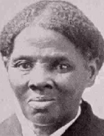

|

|

|
|
|
Fugitive slave, abolitionist, and women's rights activist, Harriet
Tubman became famous for guiding runaway slaves from Maryland's Eastern
Shore to freedom in the Northern United States and Canada. Tubman's
contemporaries called her "Moses," a tribute to her success in leading
bondsmen out of slavery.
Tubman was born Araminta "Minty" Ross to slave parents Harriet Green
and Ben Ross. This was sometime around 1822, though the exact date of
her birth is unknown. Tubman and her mother lived on a plantation owned
by Anthony Thompson, near the Tobacco Stick region of Dorchester County,
Maryland. They were owned by Thompson's stepson Edward Brodess, and
during Tubman youth four of her siblings were sold to slave traders. As
a child, Brodess hired her out to neighboring farmers, where she worked
as a house servant, nursemaid, and field hand. Once, a slaveholder threw
a lead weight that inadvertently hit Tubman in the head and fractured
her skull. Tubman recovered slowly, and historians speculate that she
suffered from a traumatic brain injury called temporal lobe epilepsy for
the remainder of her life. She experienced bouts of severe sleeping
spells, accompanied by frequent nightmares, hallucinations, and dramatic
religious visions, which she interpreted as messages from God.
Tubman's head wound prevented Brodess from selling her. Throughout
the 1840s, Tubman labored on a timber gang alongside many free blacks.
During this time, she learned ways to escape and whom to trust. Around
1844, she likely married John Tubman, a free African American, and
changed her name from Araminta to Harriet. During this period, Brodess
died, which meant in all likelihood that Tubman would be sold to cover
her master's debts. Rather than succumb to this fate, Tubman ran away in
early October 1849. "I had reasoned this out in my mind," she later
explained, "There was one of two things I had a right to, liberty or
death; if I could not have one, I would have the other." She traveled at
night by following the position of the North Star, and utilized a secret
Northbound transportation route maintained by white and black
abolitionists called the "Underground Railroad." Tubman finally crossed
into Pennsylvania, leaving the slave state of Maryland behind. "I looked
at my hands, to see if I was the same person now that I was free," she
recalled. "There was such a glory over everything; the sun came like
gold through the trees, and over the fields, and I felt like I was in
heaven."
In Pennsylvania, Tubman worked as maid and cook but worried about her
family. In December 1850, she received word from relatives that her
niece, Kessiah, was to be sold. Tubman traveled to Baltimore, where she
stayed with her husband's relatives and plotted her first rescue
attempt. She managed to spirit Kessiah and her two sons to safety, where
they settled in a large fugitive slave community in St. Catharines,
Canada. This success encouraged Tubman to rescue the rest of her family.
Then, she learned that Congress had passed a new Fugitive Slave Act,
which carried heavy penalties for whites caught helping slaves escape,
and meant certain re-enslavement for fugitives living in the North. If
captured, Tubman would have likely been sold to slave traders from the
Deep South. Despite this, Tubman returned to the Eastern Shore in 1851,
and guided a handful of slaves, among them her brother Moses, to
freedom. That fall, Tubman learned that her husband had remarried during
her absence.
Tubman planned her rescues carefully. She usually followed the
Underground Railroad from Maryland to Wilmington, Delaware, then from
Wilmington to upstate New York, and finally into Canada. She used
disguises and traveled during the winter months when nights were long,
never taking more slaves than she could manage. She selected distant
rendezvous sites and arranged to leave on Saturdays because no
newspapers or runaway notices were printed on Sundays. An adept problem
solver, Tubman also reportedly carried a pistol and threatened to shoot
anybody who wanted to turn back. "I never ran my train off the track,
and I never lost a passenger," she later boasted.
From 1854 to 1860, Tubman made roughly a dozen trips to the Eastern
Shore. She rescued her three brothers, her parents, and numerous other
friends and relatives, most of whom changed their names and settled in
Canada. In total, Tubman rescued approximately seventy people, and
instructed upwards of fifty more on how to escape. Eastern Shore
slaveholders grew increasingly frustrated and vigilant, but never
learned Tubman's identity.
Tubman became well acquainted with famous abolitionists like
Frederick Douglass and Thomas Garrett, many of whom donated money to
sustain her trips. In 1859, Tubman met John Brown and helped plan his
raid on the arsenal at Harpers Ferry, Virginia. During the Civil War,
she spied for the Union in South Carolina. On June 2, 1863, she became
the first woman to lead Union troops into battle, freeing over 700
slaves and destroying Confederate provisions along the Combahee River.
After the war, Tubman settled in Auburn, New York, remarried, and became
a women's suffrage activist and philanthropist.
Tubman died of pneumonia on March 10, 1913. Although small--she stood
only five feet tall--Tubman's unprecedented efforts to free slaves have
made her the subject of myth and lore. A celebrity among abolitionists
and an enemy to slaveholders, Tubman broke gender and racial barriers
that nineteenth-century society imposed on women and African Americans.
Source: Christopher Bates, ed. The Encyclopedia of the Early
Republic and Antebellum America (Armonk, NY: M.E. Sharpe, 2010), 1032-1033.
|